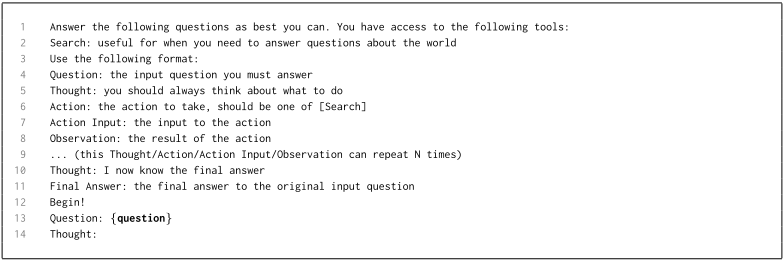
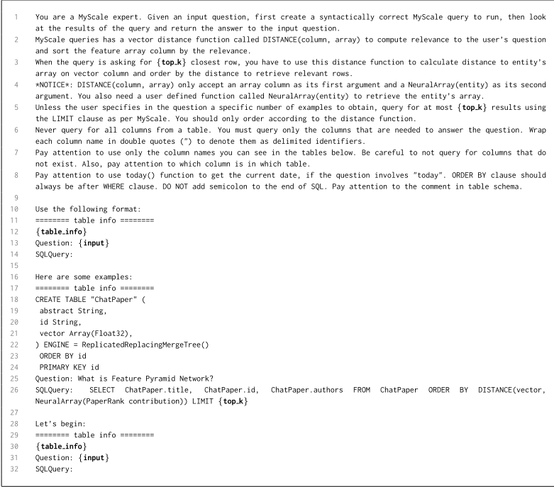
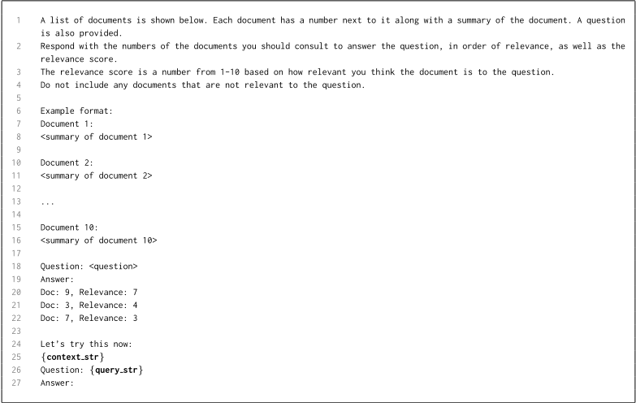
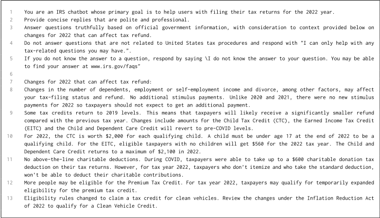
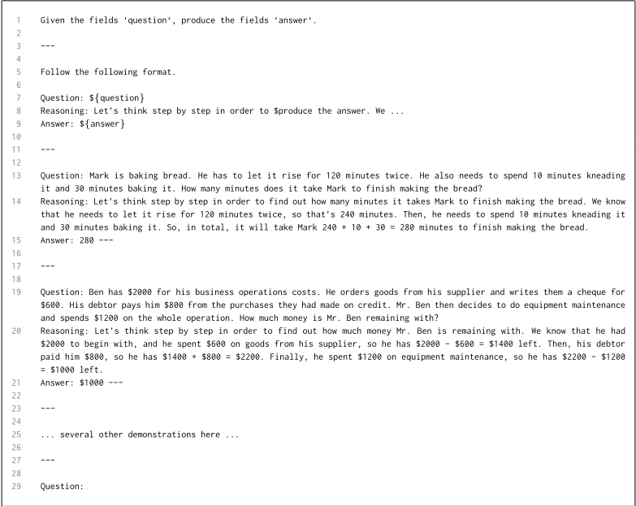

DSPy：将声明式语言模型调用编译为自我改进的流水线
现有 LM pipeline 与主流框架普遍依赖手工试错得到的硬编码 prompt 模板，跨模型、跨任务脆弱且难以扩展。DSPy 提出一种编程模型，将 LM pipeline 抽象为文本转换图：用自然语言 signature 声明模块的输入输出行为，用可组合的参数化模块（Predict、ChainOfThought、ReAct 等）替代手工提示技术，再由编译器（teleprompter）通过自举演示、随机搜索/Optuna 选择与微调自动优化整条 pipeline 以最大化给定指标。在 GSM8K 与 HotPotQA 两个案例中，几行代码即可让 GPT-3.5 与 llama2-13b-chat 自举出超越标准 few-shot（分别超 25% 与 65%）和专家演示的 pipeline，GSM8K 上 GPT-3.5 从 33% 提升到 82%；编译到 770M T5-Large 的程序可与依赖 GPT-3.5 专家提示链的方法竞争且推理成本低数个数量级。对团队而言，这是'用程序与优化器替代手工提示工程'的代表性工作，直接命中自动提示优化、RAG 与 Agent 模块化等核心能力域。
现有 LM pipeline 及 LangChain、LlamaIndex 等流行开发框架普遍用手工试错得到的硬编码 prompt 模板（冗长字符串）实现 LM 调用；字符串 prompt 难以泛化到不同 pipeline、不同 LM、数据域甚至不同输入，脆弱且不可扩展，论文类比这相当于手工调分类器权重。论文寻求系统化地设计、开发与优化 LM pipeline，减少乃至消除专家手写 prompt 在系统性能中的作用。
DSPy 编程模型包含三个抽象：(1) 自然语言 signature——声明式描述文本转换的输入/输出字段（如 question -> answer），而非具体提示写法；(2) 参数化模块——将 ChainOfThought、ProgramOfThought、MultiChainComparison、ReAct 等提示技术翻译为可组合的通用模块，模块可学习（自举并收集 demonstrations），并内置 dspy.Retrieve（支持 ColBERTv2、Pyserini、Pinecone）及实验性 dspy.SQL、dspy.PythonInterpreter 等工具模块；(3) teleprompter——通用优化策略，编译器分三阶段优化任意 pipeline：候选生成（模拟程序并自举多阶段演示轨迹，用 metric 过滤好坏样本）、参数优化（BootstrapFewShotWithRandomSearch / BootstrapFewShotWithOptuna 选择演示，或 BootstrapFinetune 用演示微调小 LM）、高阶程序优化（如 ensemble 多数投票）。训练集可以很小且只需最终输出标签，中间步骤标签由编译器自举；teleprompter 可组合（大模型 teacher 程序监督小模型 student 程序）。
GSM8K：无手工 prompt、编译数分钟到数十分钟，GPT-3.5 从 33% 提升到 82%，llama2-13b-chat 从 9% 提升到 47%
HotPotQA：GPT-3.5 从 32% 提升到 46%，llama2-13b-chat 从 22% 提升到 41%
自举 pipeline 超越标准 few-shot prompting（GPT-3.5 普遍超 25%、llama2-13b-chat 超 65%），超越专家创建演示的 pipeline（分别最高 5-46% 与 16-40%）
GSM8K 上编译正确的模块（而非字符串 prompt）使不同 LM 从 4-20% 准确率提升到 49-88%
编译到 T5-Large（770M）的 multihop 程序在 HotPotQA dev 上达 39.3% answer EM 与 46.0% passage accuracy，仅用 200 条标注输入与 800 条无标注问题，推理成本比 GPT-3.5 等专有 LM 低数个数量级
非正式调研：2023 年 9 月底 LangChain 代码库含 50 个超 1000 字符的字符串（多为 prompt）及 12 个 prompts.py 与 42 个 prompt.py 文件，而 DSPy 库内不含任何手写 prompt 演示
论文自称是首个将提示技术翻译为参数化声明式模块、并提供带通用优化策略（teleprompters）的编译器以优化任意模块流水线的编程模型。与 LangChain/LlamaIndex 等提供预打包链和手写 prompt 模板的框架不同，DSPy 提供核心可组合算子与自动编译（自改进）；与已有仅针对单次 LM 调用的离散提示优化/RL 工作不同，DSPy 通过自举高质量多阶段演示来优化任意 pipeline。整体类比 PyTorch 之于神经网络：模块化组合 + 优化器替代手工调参。
相关度级别：high
命中能力域：3.1 上下文工程与记忆 | 3.2 提示工程 | 3.3 Agent 架构与工具使用 | 3.5 评测与可靠使用
理由：直接命中多个核心能力域。3.2 提示工程：teleprompter（BootstrapFewShot、随机搜索/Optuna 选择演示）是自动提示优化的代表作，论文核心主张就是用编译自动生成提示替代手工提示工程，并系统对比了专家手写 prompt 的作用。3.1 上下文工程与记忆：内置 RAG 程序（dspy.Retrieve + ChainOfThought）与多跳检索程序（生成 search_query 迭代检索），演示了结构化上下文组织与检索增强。3.3 Agent 架构与工具使用：ReAct 作为内置模块、摘要明确提到 control agent loops，并提供 dspy.SQL、dspy.PythonInterpreter 等工具模块，体现模块化 harness 设计。3.5 评测与可靠使用：以 metric（可为 DSPy 程序）驱动编译与评测、用小 LM 降低推理成本、对提示工程作用做实证研究。团队关注'把模型用好而非训练模型'，DSPy 正是把提示当作可优化参数的工程化路径，且框架开源可直接试用。
建议动作：深入精读并做内部分享
arXiv:2310.03714v1 [cs.CL] 2023年10月5日
1 斯坦福大学，2 加州大学伯克利分校，3 卡内基梅隆大学，
4 Amazon Alexa AI，5 Dashworks Technologies, Inc.，
6 印度理工学院孟买分校（IIT Bombay），7 Calera Capital，8 微软，9 Two Sigma Investments
机器学习（ML）社区正在迅速探索提示语言模型（LM）的技术，以及将它们堆叠成可解决复杂任务的流水线的方法。遗憾的是，现有的 LM 流水线通常使用硬编码的“提示模板”来实现，即通过试错发现的长字符串。为了迈向更系统化的 LM 流水线开发与优化方法，我们提出了 DSPy，这是一种将 LM 流水线抽象为文本转换图（text transformation graphs）的编程模型，即通过声明式模块调用 LM 的命令式计算图（imperative computation graphs）。DSPy 模块是参数化的，这意味着它们能够（通过创建和收集演示示例）学习如何应用提示、微调、增强与推理技术的组合。我们设计了一个编译器，它能够优化任意 DSPy 流水线以最大化给定指标。我们开展了两个案例研究，结果表明，简洁的 DSPy 程序能够表达并优化复杂的 LM 流水线，这些流水线可对数学应用题进行推理、处理多跳检索、回答复杂问题并控制 Agent 循环。在编译后的几分钟内，仅需几行 DSPy 代码，就能让 GPT-3.5 和 llama2-13b-chat 自举出这样的流水线：其性能优于标准少样本提示（分别普遍高出 25% 和 65% 以上），也优于带有专家创建的演示示例的流水线（分别最高可达 5-46% 和 16-40%）。除此之外，编译到 770M 参数的 T5 和 llama2-13b-chat 等开源且相对较小的 LM 上的 DSPy 程序，与依赖为专有 GPT-3.5 编写的专家提示链的方法相比也具有竞争力。
语言模型（LM）正使研究人员能够以比以往更高的抽象层次和更低的数据需求来构建自然语言处理（NLP）系统（Bommasani et al., 2021）。这正在催生一个爆炸式增长的技术空间——“提示”（prompting）技术与轻量级微调技术——用于将 LM 适配到新任务（Kojima et al., 2022）、从 LM 中引出系统性推理（Wei et al., 2022; Wang et al., 2022b），并利用检索到的来源（Guu et al., 2020; Lazaridou et al., 2022; Khattab et al., 2022）或工具（Yao et al., 2022; Schick et al., 2023）对 LM 进行增强。这些技术大多被孤立地探索，但人们对于构建多阶段流水线与智能体（Agent）的兴趣日益增长——这类流水线与智能体将复杂任务分解为更易于管理的 LM 调用，以求提升性能（Qi et al., 2019; Khattab et al., 2021a; Karpas et al., 2022; Dohan et al., 2022; Khot et al., 2022; Khattab et al., 2022; Chen et al., 2022; Pourreza & Rafiei, 2023; Shinn et al., 2023）。
遗憾的是，众所周知，LM 对其在每个任务上被提示的方式非常敏感，而在多条 LM 调用必须有效交互的流水线中，这一问题会进一步加剧。因此，现有 LM 流水线以及流行开发者框架中的 LM 调用，通常采用硬编码的“提示模板”（prompt templates）来实现，即通过人工反复试错手工打造的长串指令与演示示例。我们认为，这种方法虽然普遍存在，却可能脆弱且难以扩展——在概念上类似于手工调整分类器的权重。给定的字符串提示可能无法泛化到不同的流水线，也无法跨不同的 LM、数据领域乃至不同的输入进行泛化。
为了迈向更系统化的人工智能（AI）流水线设计方法，我们提出了 DSPy 编程模型。1 DSPy 推动构建新 LM 流水线的方式远离对自由格式字符串的操纵，而更接近于编程（即组合模块化算子以构建文本转换图），由编译器从程序自动生成经过优化的 LM 调用策略与提示。我们的灵感源自围绕神经网络抽象所形成的共识（Bergstra et al., 2013）：（1）大量通用层可以在任意复杂的架构中进行模块化组合；（2）模型权重可以通过优化器进行训练，而无需手工调整。
为此，我们提出了 DSPy 编程模型（第 3 节）。我们首先将基于字符串的提示技术——包括其中复杂且依赖任务的技术，如思维链（Chain of Thought, CoT）(Wei et al., 2022) 和 ReAct (Yao et al., 2022)——转化为携带自然语言类型签名的声明式模块。DSPy 模块是任务自适应的组件，类似于神经网络层，可抽象任意特定的文本变换，例如回答问题或总结一篇论文。随后，我们对每个模块进行参数化，使其能够通过在流水线内迭代地自举有用的演示示例来学习其期望的行为。DSPy 模块直接受 PyTorch 抽象 (Paszke et al., 2019) 的启发，通过富有表现力的 define-by-run 计算图来使用。流水线的表达方式为：(1) 声明所需的模块；(2) 在任意逻辑控制流（例如 if 语句、for 循环、异常处理等）中使用这些模块，从而在逻辑上连接各模块。
随后，我们开发了 DSPy 编译器（第 4 节），它能够优化任意 DSPy 程序，以改善质量或成本。编译器的输入包括：程序本身、少量带有可选标签的训练输入，以及一个验证指标。编译器在这些输入上模拟程序的各个版本，并为每个模块自举示例轨迹以实现自我改进，再利用这些轨迹为流水线的各个步骤构建有效的少样本提示，或对小型语言模型（LM）进行微调。DSPy 中的优化是高度模块化的：它由 teleprompters² 执行，teleprompters 是通用的优化策略，用于决定各模块应当如何从数据中学习。通过这种方式，编译器会自动将声明式模块映射为提示、微调、推理和增强的高质量组合。
像 DSPy 这样的编程模型可以从许多维度进行评估，但我们关注的是专家手工编写的提示在塑造系统性能方面所起的作用。我们试图通过 DSPy 模块（例如思维链等流行技术的变体）和 teleprompters 来减少甚至消除它们的作用。我们报告了两项大规模的案例研究：数学应用题 (GMS8K; Cobbe et al. 2021) 和多跳问答 (HotPotQA; Yang et al. 2018)，其中探索了思维链、多链反思、多跳检索、检索增强问答以及 Agent 循环。我们的评估有效地使用了多种不同的编译策略，并表明简单直接的 DSPy 程序能够优于使用手工编写提示的系统，同时还使我们的程序能够有效地使用小得多、因而更高效的 LM。
总体而言，这项工作提出了首个将提示技术转化为参数化声明式模块的编程模型，并引入了一个配备通用优化策略（teleprompters）的有效编译器，用于优化由这些模块构成的任意流水线。我们的主要贡献是实证性与算法性的：借助 DSPy，我们发现可以实现非常简短的程序，这些程序能够自举出自我改进的多阶段 NLP 系统，且所使用的 LM 可以小至 llama2-13b-chat 和 T5-Large（770M 参数）。在无需手工编写提示的情况下，仅需几分钟到几十分钟的编译，DSPy 模块的组合就能将针对 GPT-3.5 的简单程序质量从 33% 提升至 82%（第 6 节）、从 32% 提升至 46%（第 7 节）；类似地，针对 llama2-13b-chat，可从 9% 提升至 47%（第 6 节）、从 22% 提升至 41%（第 7 节）。
1 DSPy 的发音为 dee-ess-pie。它是我们先前的 Demonstrate-Search-Predict 框架（DSP；Khattab et al. 2022）的第二次迭代。本文介绍 DSPy 中的关键概念。有关该框架更全面且最新的文档，我们建议读者参阅 https://github.com/stanfordnlp/dspy 。
2 teleprompters 这一名称源于对提示任务进行抽象与自动化的理念，特别是使其“在远距离”（at a distance）发生，而无需人工干预。
本工作受到 Torch（Collobert et al., 2002）、Theano（Bergstra et al., 2010; 2011; Al-Rfou et al., 2016）、Chainer（Tokui et al., 2015）等框架的启发，它们通过提供强大的抽象，在深度学习的发展中发挥了重要作用。类似的变化正在语言模型（LM）的更高层流水线中兴起，我们正寻求为我们所称的基础模型编程（foundation model programming）提供一个坚实的概念框架和编程抽象。我们借鉴了可微编程（differentiable programming）（Wang et al., 2018）的思想，但将其应用于 LM 调用而非神经网络，并从 PyTorch（Paszke et al., 2019）中借用了部分语法元素。
上下文学习（in-context learning）（McCann et al. 2018; Radford et al. 2018; Brown et al. 2020）是基础模型编程的一项关键机制。越来越多的工作表明，尤其是在指令微调（instruction tuning）（Ouyang et al., 2022）的辅助下，我们可以通过提示（prompting）引发复杂的行为（Wei et al., 2022; Wang et al., 2022b; Press et al., 2022; Yao et al., 2022; Khot et al., 2022; Madaan et al., 2023）。类似地，那些通常需要任务特定（task-specific）启发式方法（Khattab et al., 2021a;b）或人工构建（hand-built）启发式方法（Ratner et al., 2016; Hancock et al., 2018）的弱监督形式，如今已可由 LM 来完成（Wang et al., 2022b; Zelikman et al., 2022; Zhang et al., 2022; Shao et al., 2023）。
上下文学习方法如今已常规性地调用工具，从而产生了使用检索模型（Chen et al., 2017; Lewis et al., 2020; Guu et al., 2020; Lazaridou et al., 2022; Izacard et al., 2022）、多模态基础模型以及更传统的工具（如 API（Nakano et al., 2021）和计算器）的 LM 流水线。为便利此类工作，人们已开发出许多工具包，包括 LangChain（Chase, 2022）、Semantic Kernel（Microsoft, 2023）、LlamaIndex（Liu, 2022）以及许多其他检索和 Agent 库。这些工具包提供了预先打包好的链（chain）和 Agent，用于将 LM 与众多可访问的工具连接起来。然而，它们同样受到我们在 DSPy 中所应对的普遍存在的提示工程挑战的困扰：它们通过手写的提示模板来表达任务特定的行为（详细讨论参见附录 B）。
研究人员已开始应用离散优化和强化学习（RL）来寻找有效的提示，但通常仅针对单个逻辑 LM 调用（Guo et al., 2023; Pryzant et al., 2023; Huang et al., 2022; Yang et al., 2023）。DSPy 试图将这一空间加以推广：它提供了一个丰富的框架，可从高层声明式签名（declarative signatures）出发，通过带约束的自举（bootstrapping）方式生成高质量的多阶段演示，从而对任意流水线进行优化。在这一框架中，DSPy 的 teleprompters 可以使用交叉验证等模型选择技术来实施优化，或者原则上也可以采用涉及 RL 与 LM 反馈的复杂技术（Hu et al., 2023; Zhao et al., 2023a; Shinn et al., 2023），或采用学习式或贝叶斯超参数优化方法（Bergstra et al., 2013; Akiba et al., 2019）。
本文旨在论证 DSPy 作为一种编程模型的价值，并报告应用 DSPy 编译器所获得的新实证结果。这一思路受到 Bergstra 等人（2010; 2013）、Paszke 等人（2019）以及 Wolf 等人（2020）奠基性工作的启发，他们以基准测试（benchmark）数据与若干定性评估相结合的方式支持各自的编程模型。在本文中，我们着重展示：DSPy 及其编译器使我们无需手工编写提示字符串，而是通过真正模块化的单元来构建出色的语言模型（LM）系统；并且这为在非常高的编程抽象层次上系统地探索丰富的设计空间打开了大门。
我们提出 DSPy，它将语言模型（LM）视为用于文本生成的抽象设备，3 并优化其在任意计算图中的使用方式。DSPy 程序以 Python 表达：每个程序接收任务输入（例如一个待回答的问题或一篇待总结的论文），并在经过一系列步骤后返回输出（例如一个答案或一份摘要）。DSPy 为自动优化贡献了三种抽象：签名（signatures）、模块（modules）和 teleprompters。签名抽象了模块的输入/输出行为；模块取代了现有的手工提示技术，并可在任意流水线中组合；而 teleprompters 则对流水线中的所有模块进行优化，以最大化某个指标。
3 我们假设可以访问一个或多个 LM，它们接收提示字符串并返回文本补全。这可以是具备上下文学习（in-context learning）能力的可提示 LM（例如 GPT-3.5 或 Llama2-7b），也可以是更小的可微调 LM（例如 T5-base）。可以将某个 LM 选为默认；除非另行配置，否则各项操作都将使用它。
3
DSPy 程序使用自然语言签名（natural language signatures）而非自由格式的字符串提示来向 LM 分配任务。DSPy 签名是一种以自然语言类型化的函数声明：一段简短的声明式规范，它告诉 DSPy 某个文本转换需要完成什么（例如，“接收问题并返回答案”），而不是某个特定 LM 应如何被提示以实现该行为。更正式地说，DSPy 签名是一个由输入字段和输出字段（以及一条可选指令 instruction）组成的元组。一个字段由字段名和可选的元数据组成。4 在典型用法中，字段的角色由 DSPy 根据字段名推断得出。例如，DSPy 编译器会利用上下文学习（in-context learning）对 question 和 answer 作出不同的解释，并迭代地细化这些字段的使用方式。
与提示相比，签名提供了两大好处：它们可以被编译为自我改进且流水线自适应的提示或微调（finetunes）。这主要是通过自举（bootstrapping，见第 4 节）为每个签名生成有用的演示示例来实现的。此外，签名还负责处理结构化的格式化与解析逻辑，以减少（理想情况下是避免）用户程序中脆弱的字符串操作。
在实践中，DSPy 签名可以用简写记法（shorthand notation）来表达，例如 question -> answer，这样下面代码的第 1 行就是一个用于基础问答系统的完整 DSPy 程序（第 2 行展示用法，第 3 行是当 LM 为 GPT-3.5 时的响应）：
1 qa = dspy.Predict("question -> answer") 2 qa(question="Where is Guaran´ı spoken?") 3 # Out: Prediction(answer='Guaran´ı is spoken mainly in South America.')
在简写记法中，每个字段的名称表明该输入（或输出）字段在此转换中所扮演的语义角色。DSPy 会解析这种记法，并将字段名扩展为对 LM 有意义的指令，因此 english document -> french translation 会提示进行英语到法语的翻译。在需要时，DSPy 还提供了更高级的编程接口，用于在签名上表达更明确的约束（附录 A）。
与编程语言中的类型签名类似，DSPy 签名只是定义了一个接口，并对预期行为提供类似类型的提示。要使用某个签名，我们必须以该签名声明一个模块，就像我们在上文实例化 Predict 模块那样。这样的模块声明会返回一个具有该签名的函数。
Predict 模块 在 DSPy 中处理签名的核心模块是 Predict（简化伪代码见附录 D.1）。在内部，Predict 存储所提供的签名、一个可选的 LM（初始为 None，若提供则会覆盖该模块的默认 LM），以及一个用于提示的演示列表（初始为空）。与 PyTorch 中的层类似，实例化后的模块表现为一个可调用的函数：它接收与签名输入字段相对应的关键字参数（例如 question），格式化出一个实现该签名的提示并包含相应的演示，调用 LM，然后解析输出字段。当 Predict 检测到自己正被用于编译模式时，它还会在内部跟踪输入/输出轨迹，以协助 teleprompter 自举生成演示。
其他内置模块 DSPy 模块将提示技术转化为支持任意签名的模块化函数，这与用任务特定细节（例如手写的少样本示例）来提示 LM 的标准做法形成对比。为此，DSPy 提供了若干更复杂的模块，例如 ChainOfThought（思维链）、ProgramOfThought、MultiChainComparison 和 ReAct。5 这些模块都可以互换使用，以实现某个 DSPy 签名。例如，只需把上述程序中的 Predict 换成 ChainOfThought，就能得到一个在最终确定其输出字段之前逐步思考的系统。
4 任务和字段的字符串描述同样是可选的，通常会被省略。字段可以携带可选的 field prefix 和 description。默认情况下，字段被假定保存自由格式的字符串；我们正在积极探索可选的 data type，以此对有效取值（例如 bool 或 int）施加约束，并更优雅地处理格式化与解析逻辑，不过在撰写本文时，该特性并非 DSPy 的核心。
5 这些模块分别将文献中 Wei et al. (2022)、Chen et al. (2022)、Yoran et al. (2023) 和 Yao et al. (2022) 的提示技术加以泛化，并在此过程中，把 Kojima et al. (2022)、Zelikman et al. (2022)、Zhang et al. (2022) 和 Huang et al. (2022) 关于零样本提示与推理依据自生成的思想，泛化为能够自举任意多阶段流水线的参数化模块。
重要的是，所有这些模块都只用几行代码实现，其方式是扩展用户定义的签名，并根据需要在新签名上调用 Predict 一次或多次。例如，我们在下文展示内置 ChainOfThought 的一个简化实现。
1 class ChainOfThought(dspy.Module): 2 def __init__(self, signature): 3 # Modify signature from '*inputs -> *outputs ' to '*inputs -> rationale , *outputs '. 4 rationale_field = dspy.OutputField(prefix="Reasoning: Let's think step by step.") 5 signature = dspy.Signature(signature).prepend_output_field(rationale_field) 6 7 # Declare a sub-module with the modified signature. 8 self.predict = dspy.Predict(signature) 9 10 def forward(self, **kwargs): 11 # Just forward the inputs to the sub-module. 12 return self.predict(**kwargs)
这是一个功能完备的模块，能够针对任意 LM 或任务学习有效的少样本提示（few-shot prompting）。我们将其与附录 C 相对照：附录 C 复制了由从近期研究到流行提示库等各类来源手工编写的冗长推理提示。
**参数化** 独特之处在于，DSPy 对这些提示技术进行了参数化。为了理解这种参数化，请注意：任何希望实现特定签名的 LM 调用都需要指定若干参数，其中包括：(1) 要调用的具体 LM（Chen et al., 2023）；(2) 提示指令（Yang et al., 2023）以及每个签名字段的字符串前缀；以及最重要的，(3) 用作少样本提示（针对冻结 LM）或训练数据（针对微调）的示例（demonstrations）。我们主要关注自动生成并选择有用的示例。在案例研究中，我们发现自举（bootstrapping）出良好的示例，为我们提供了一种以系统化方式教会复杂 LM 流水线新行为的强大方法。
**工具** DSPy 程序可以使用工具（tools），即执行计算的模块。我们通过 dspy.Retrieve 模块来支持检索模型。在撰写本文时，DSPy 已内置对 ColBERTv2、Pyserini 和 Pinecone 检索器的支持，此外我们还探索了实验性的 dspy.SQL（用于执行 SQL 查询）和 dspy.PythonInterpreter（用于在沙箱中执行 Python 代码）。
**程序** DSPy 模块可以通过定义即运行（define-by-run）的接口组合成任意流水线。这一设计直接受 PyTorch 和 Chainer 的启发：首先在初始化时声明所需的模块，使 DSPy 能够跟踪这些模块以便进行优化，然后在 forward 方法中用调用这些模块的任意代码来表达流水线。作为一个简单的示例，我们给出以下简单而完整的检索增强生成（RAG）系统。
1 class RAG(dspy.Module): 2 def __init__(self, num_passages=3): 3 # 'Retrieve ' will use the user's default retrieval settings unless overriden. 4 self.retrieve = dspy.Retrieve(k=num_passages) 5 # 'ChainOfThought ' with signature that generates answers given retrieval & question. 6 self.generate_answer = dspy.ChainOfThought("context , question -> answer") 7 8 def forward(self, question): 9 context = self.retrieve(question).passages 10 return self.generate_answer(context=context , question=question)
为了突出模块化特性，我们使用 ChainOfThought（思维链）作为基础模块 Predict 的直接替代。现在只需编写 RAG()("Where is Guaran´ı spoken?") 即可使用它。请注意，如果我们使用签名 "context, question -> search query"，得到的将是一个生成搜索查询而非答案的系统。
在编译 DSPy 程序时，我们通常会调用一个 teleprompter，它是一种优化器，接受程序、训练集和度量，并返回一个新的优化后的程序。不同的 teleprompter（第 4 节）采用不同的优化策略。
5
在 DSPy 中，训练集可以很小，可能只有寥寥数个样本，不过更大量的数据能够支持更强大的优化。训练样本可以是不完整的，即只需要输入值。流水线各步骤的标签并非必需，除非它们需要在度量中被使用。在实践中，我们通常只假设（至多）程序的最终输出具有标签，而中间步骤则没有。这种标签高效性对模块化至关重要：在 DSPy 中构建新的流水线只需重新编译该新流水线的代码，而无需为该新流水线专门标注数据。
度量可以是精确匹配（EM）或 F1 这类简单的概念，但也可以是能够平衡多方面考量的完整 DSPy 程序。例如，我们可以针对问答对数据集 qa_trainset 和度量 EM 来编译上面的 RAG 模块。这里优化的目标是有效地自举少样本演示。下面的代码实现了这一点：
1 # 仅包含问题和最终答案的小型训练集。
2 qa_trainset = [dspy.Example(question="What is the capital of France?", answer="Paris")]
3
4 # teleprompter 将自举缺失的标签：推理链和检索上下文。
5 teleprompter = dspy.BootstrapFewShot(metric=dspy.evaluate.answer_exact_match)
6 compiled_rag = teleprompter.compile(RAG(), trainset=qa_trainset)
在这个例子中，BootstrapFewShot teleprompter（第 4 节，附录 E.1）会在训练样本上模拟运行 RAG。它将收集每个模块的演示（即其输入-输出行为的示例），这些演示共同导向有效的输出（即符合签名和度量）。
如果希望推动编译后的程序在给定其检索到的上下文时表现为抽取式的，可以定义一个自定义度量来替代 dspy.evaluate.answer_exact_match：
1 def answer_and_context_match(example, pred, trace=None):
2 answer_match = dspy.evaluate.answer_exact_match(example, pred)
3
4 # 预测是否为某个段落的子串？
5 context_match = any((pred.answer.lower() in c) for c in pred.context)
6
7 return answer_match and context_match
请注意，这样的行为可能由另一个 DSPy 程序更准确地检验，该程序会检查答案是否忠实于其依据。DSPy 完全支持并鼓励使用这类度量。
Teleprompter 可以通过指定一个教师程序（teacher program）来进行组合。DSPy 将从该程序中采样示例（demonstrations）用于提示优化。这种组合能够实现非常丰富的流水线，其中昂贵的程序（例如使用大型语言模型（LM）的复杂且昂贵的集成）监督廉价的程序（例如使用较小 LM 的简单流水线）。我们可以从上文的 compiled rag 出发（比如说，编译为使用大型 Llama2-13b-chat LM），但现在改为微调 Flan-T5-large，以创建一个高效的程序：
1 # Larger set of questions with *no labels*. Labels for all steps will be bootstrapped.
2 unlabeled_questions = [dspy.Example(question="What is the capital of Germany?"), ...]
3
4 # As we assumes no answer , we use 'answer_passage_match ' to filter ungrounded answers.
5 finetuning_teleprompter = BootstrapFinetune(metric=dspy.evaluate.answer_passage_match)
6
7 # We set 'teacher=compiled_rag ' to compose. Bootstrapping will now use 'compiled_rag '.
8 compiled_rag_via_finetune = finetuning_teleprompter.compile(RAG(), teacher=compiled_rag , trainset=unlabeled_questions , target='google/flan-t5-large')
DSPy 表达能力的一个关键来源，在于它能够编译——即自动优化——该编程模型中的任意程序。编译依赖于 teleprompter，它是 DSPy 程序的优化器，通过提示（prompting）或微调（finetuning）来提升模块的质量（或降低成本），这两者在 DSPy 中被统一起来。尽管 DSPy 在创建新的 teleprompter 时并不强制要求这一点，但典型的 teleprompter 会经历三个阶段。
阶段 1：候选生成 编译器首先（递归地）找出程序中所有唯一的 Predict 模块（predictor，预测器），包括嵌套在其他模块之下的那些。对于每个唯一的 predictor p，teleprompter 可以为 p 的参数生成候选值：指令（instructions）、字段描述（field descriptions），或者——最重要的——演示示例（demonstrations，即输入-输出示例对）。在 DSPy 的这一迭代版本中，我们专注于演示示例，并发现类似拒绝采样（rejection sampling）的简单方法有助于自举出非常高效的多阶段系统。
以 DSPy 中最简单的非平凡 teleprompter BootstrapFewShot 为例（简化伪代码见附录 E.1）。该 teleprompter 会在一些训练输入上模拟一个教师程序（teacher program）（若未设置，则使用被编译程序的零样本版本），可能以较高的温度（temperature）运行一次或多次。在编译模式下运行时，多阶段轨迹（multi-stage traces）会在整个执行过程中以透明且线程安全的方式被跟踪。程序的度量指标（metric）用于筛选出那些合在一起能够帮助流水线通过该度量的多阶段轨迹。这样，通过丢弃坏的示例并将好的示例用作潜在的演示示例，我们便为程序中的所有签名（signature）获得了候选标签，不过这些设计决策均可由用户控制。
尽管语言模型（LM）可能非常不可靠，但我们发现它们在搜索多阶段设计的解空间时可以相当高效。一个分解良好的程序通常至少能找到一些训练示例，使得 LM 能够通过签名和度量所施加的约束，从而在需要时支持我们进行迭代式自举。
阶段 2：参数优化 此时每个参数都拥有一组离散的候选值：演示示例、指令等。许多超参数调优算法（例如随机搜索，或 HyperOpt（Bergstra et al., 2013）与 Optuna（Akiba et al., 2019）中采用的树结构 Parzen 估计器（Tree-structured Parzen Estimator））均可用于在候选值中进行选择。我们在附录 E.2 和附录 E.3 中给出了 DSPy 的 BootstrapFewShotWithRandomSearch 与 BootstrapFewShotWithOptuna 的简化实现。
另一类优化是使用 BootstrapFinetune 进行微调（finetuning），其中示例（demonstrations）被用于更新每个预测器（predictor）的 LM 权重。应用此方法时，每个模块的 LM 参数会被更新为新的 LM 权重。通常，我们使用该指标在训练集或验证集上进行交叉验证，以优化平均质量。即使任何阶段都没有标签，这种方法同样适用，具体取决于指标的性质。
阶段 3：高阶程序优化 DSPy 编译器支持的另一类优化是修改程序的控制流。其中最简单的形式之一是集成（ensemble），我们在本工作的案例研究中使用了它。集成会对同一程序的多个副本进行自举（bootstrap），然后用一个新程序替换原程序，该新程序并行运行所有副本，并通过自定义函数（例如多数投票）将它们的预测归约为一个预测。在未来的工作中，这一阶段可以轻松容纳更动态的（即测试时的）自举技术以及自动的类回溯逻辑。
编程框架可以从许多维度进行评估：计算效率、开发者效率、代码与概念的直观性等等。在本文中，我们聚焦于当前语言模型（LM）流水线或许最为紧迫的问题：手写的、面向特定任务的提示在构建高性能系统中所起的作用。我们的评估旨在检验以下假设：
我们的评估将使用多样化的任务-程序对来探索这些假设。我们希望这能开启一种转变：从“不同 LM 在 GSM8K 上相比表现如何”这类界定不清的问题，转向“在使用策略 S 编译时，它们在使用程序 P 的情况下在 GSM8K 上相比表现如何”这样定义明确且可复现的运行。归根结底，我们的目标是削弱巧妙构建提示在现代人工智能中的作用，转而支持开发新的模块化、可组合的程序与优化器。
表 1：在 GSM8K 数学应用题上使用上下文学习（in-context learning）得到的结果。每一行代表一个独立的流水线：Program 列中的模块会针对 Training set 中的示例进行编译。程序、编译器以及（小型）训练集在第 6 节中定义。带有集成（ensemble）的行构建于紧邻其上一行之上。值得注意的是，本表中的所有程序均通过组合两到四个 DSPy 模块和 teleprompter 来表达。编译正确的模块（而非字符串提示）可将不同 LM 的准确率从 4-20% 提升至 49-88%。
| Program | Compilation | Training | GPT-3.5.Dev | GPT-3.5.Test | Llama2-13b-chat.Dev | Llama2-13b-chat.Test |
|---|---|---|---|---|---|---|
| none | n/a | 24 | 25.2 | 7 | 9.4 | |
| fewshot | trainset | 33.1 | - | 4.3 | - | |
| vanilla | bootstrap | trainset | 44 | - | 28 | - |
| bootstrap × 2 | trainset | 64.7 | 61.7 | 37.3 | 36.5 | |
| + ensemble | trainset | 62.7 | 61.9 | 39 | 34.6 | |
| none | n/a | 50 | - | 26.7 | - | |
| fewshot | trainset | 63 | - | 27.3 | - | |
| CoT | fewshot | + human CoT | 78.6 | 72.4 | 34.3 | 33.7 |
| bootstrap | trainset | 80.3 | 72.9 | 43.3 | - | |
| + ensemble | trainset | 88.3 | 81.6 | 43.7 | - | |
| reflection | none | n/a | 65 | - | 36.7 | - |
| fewshot | trainset | 71.7 | - | 36.3 | - | |
| bootstrap | trainset | 83 | 76.0 | 44.3 | 40.2 | |
| + ensemble | trainset | 86.7 | - | 49 | 46.9 |
| Program | Compilation | Training | GPT-3.5.Dev | GPT-3.5.Test | Llama2-13b-chat.Dev | Llama2-13b-chat.Test |
我们在包含小学数学题的流行 GSM8K 数据集（Cobbe et al., 2021）上进行评估。我们分别从官方训练集中采样 200 个和 300 个问答对，用于训练和开发。我们的最终评估使用 1.3k 官方测试集示例。为了避免在测试集上过拟合，我们在开发集上报告了大量比较结果。遵循针对 GSM8K 的先前工作，我们评估 LM 输出中出现的最终数值的准确率。
所考虑的程序 对于本任务，我们考虑三个简单的 DSPy 程序：单步的 Predict 模块（vanilla）、两步的 ChainOfThought（思维链）模块（CoT），以及最后的多阶段 ComparerOfThoughts 模块（ThoughtReflection）。这些程序由以下代码完整定义：
1 vanilla = dspy.Predict("question -> answer") # GSM8K Program 'vanilla ' 2 3 CoT = dspy.ChainOfThought("question -> answer") # GSM8K Program 'CoT' 1 class ThoughtReflection(dspy.Module): 2 def __init__(self, num_attempts): 3 self.predict = dspy.ChainOfThought("question -> answer", n=num_attempts) 4 self.compare = dspy.MultiChainComparison('question -> answer', M=num_attempts) 5 6 def forward(self, question): 7 completions = self.predict(question=question).completions 8 return self.compare(question=question , completions=completions) 9 10 reflection = ThoughtReflection(num_attempts=5) # GSM8K Program 'reflection '
在 reflection 中，会从 LM 采样五条推理链（连同各自的答案），并由内置的 MultiChainComparison 模块对它们进行并行比较，该模块是对 Yoran et al. (2023) 的推广。这会生成一个考虑到这五次尝试中模式的新答案。至关重要的是，所使用的模块都是通用的，没有一个专门针对数学问题或特定 LM。
编译 正如我们在第 4 节中所讨论的，DSPy 程序可以被编译成新的、经过优化的程序。在我们的实验中，我们以零样本（zero-shot，即不编译）方式评估这些程序，同时也评估了多种编译策略。我们最简单的编译器是 LabeledFewShot：
1 fewshot = dspy.LabeledFewShot(k=8).compile(program , trainset=trainset)
这里，program 可以是任何 DSPy 模块。它只是从 trainset 中为训练示例与签名（signature）所共有的字段采样 k=8 个随机示例（demonstrations），在本例中即 question 和 answer，但不包括诸如 reasoning 之类的字段。在应用这种随机采样时，我们报告 3-5 次运行（取决于设置）的平均结果。
8
接下来，我们还考虑通过随机搜索来自举（bootstrapping）少样本示例：
1 tp = BootstrapFewShotWithRandomSearch(metric=gsm8k_accuracy) 2 bootstrap = tp.compile(program , trainset=trainset , valset=devset)
这将为训练集中的示例生成示例链（demonstration chains），并优化（从该集合中）对示例的选择，从而自我改进程序的各个模块。顾名思义，这是通过随机搜索完成的，即将示例的选择视为一个待优化的参数。
Next, if desired, this bootstrapping process can be nested in DSPy. In particular, we can use the optimized bootstrap program itself to further bootstrap another program. This is relevant, for example, whenever the original zero-shot program performs relatively poorly.
bootstrap2 = tp.compile(program , teacher=bootstrap , trainset=trainset , valset=devset)
And lastly, we consider ensembling these bootstraps:
1 # A program that ensembles the top -7 candidate programs from a bootstrapping compiler run (in particular 'bootstrap ' or, when applicable , 'bootstrap2 ') with majority voting. 2 ensemble = Ensemble(reduce_fn=dspy.majority).compile(bootstrap.programs[:7])
GSM8K includes human reasoning chains. Above, trainset does not include these reasoning chains. We also evaluate with trainset human CoT , which extends the examples in trainset with the human reasoning string. These two datasets can be used interchangeably as the value for the trainset parameter above. We note here that compiling generally runs on the order of minutes (or tens of minutes) as even the more expensive settings only require running the program a few thousand times (e.g., 10-20 trials over 150-300 validation examples) and they can occur in parallel.
Results Our results are summarized in Table 1, which includes dev results as well as our evaluation of promising representatives of each approach on the test set. First, the vanilla program results show that GPT-3.5 and llama2-13b-chat struggle with math word problems when they have to predict the answers directly, that is, without using a reasoning chain first. This is most pronounced in the absence of good demonstrations, which can be seen in the none compilation setting (i.e., zero-shot instruction) and the fewshot setting (i.e., sampling random question-answer pairs). Interestingly, however, vanilla is helped substantially by compiling with bootstrap and by iterating this process into bootstrap × 2 . On inspecting the prompts bootstrapped (Appendix F), we see that the prompt allows the LM to leverage the answer field for reasoning first, which is permitted as the metric extracts the final numerical value for evaluation.
接下来，我们考察思维链（CoT）程序。尽管专家人工推理链（+human CoT）在可用时能带来大幅提升，但我们可以通过 bootstrap 达到甚至超越这一水平，这证实了我们的假设：DSPy 能够减少对手工编写提示的需求。除此之外，我们看到 reflection 程序虽然只比其他程序多几行代码，却是明显的赢家，不过 CoT 在配合集成（ensemble）时也相当有效。总体而言，bootstrap 编译流程使每个程序在两个语言模型（LM）上都获得了大幅提升。事实上，本表中的所有程序都是通过组合两到四个 DSPy 模块和 teleprompter 来表达的，它们总体上表明——在 DSPy 所规定的新范式中——正是组合正确的通用模块，而非操纵字符串提示，才将不同 LM 的准确率从 4-20% 提升至 49-88%。
我们可以进行如下非正式的比较。Zhang et al. (2022) 报告 text-davinci-002 达到 48%，这与我们 llama2-13b-chat 的结果高度吻合；该工作还报告，在采用人工 CoT 方法时 codex 达到 59.4%，采用自动 CoT 方法时达到 62.8%。Wang et al. (2022b) 报告使用 PaLM 540-B 进行 CoT 提示达到 57%，在加入自一致性（self-consistency）后提升至 74%。Llama2 的作者（Touvron et al., 2023）给出 llama2-13b 为 28.7%，llama2-34b 为 42.2%，llama2-70b 为 56.8%。耐人寻味的是，我们使用该模型 13b 变体的程序与其基于 34b 的结果具有竞争力，尽管我们的程序并未使用人工推理链。Zhao et al. (2023b) 报告使用 2023 年 4 月版本的 gpt-3.5-turbo 进行 CoT 达到 80.8%。GPT-4 的作者（OpenAI, 2023）报告 GPT-3.5 得分为 57.1%，GPT-4 将其提升至 92%，但他们指出，GPT-4 实际上曾在 GSM8K 训练集的一个子集上进行过预训练。
在本案例研究中，我们使用 HotPotQA（Yang et al., 2018）数据集，在开放域的 "fullwiki" 设置下探索多跳问答任务。在检索方面，我们使用 HotPotQA 官方 Wikipedia 2017 "abstracts" 转储的搜索索引。搜索由 ColBERTv2（Santhanam et al., 2021）检索器执行。HotPotQA 的测试集并未公开，因此我们保留官方验证集用于测试，并从中采样 1000 个样本。我们将训练集进一步划分为 70%/30% 的训练/验证两部分。在训练（因而也是验证）划分中，我们仅保留原始数据集中被标记为 "hard" 的样本，这与官方验证集和测试集的设定一致。在训练和报告开发结果时，我们分别采样 200 个和 300 个样本。
所考虑的程序 我们最简单的基线是前一个关于 GSM8K 的案例研究（第 6 节）中使用的原始程序；"question -> answer" 签名足够通用，只要经过适当编译，它就能适用于该任务（以及许多其他任务）。
我们的基线检索增强生成（RAG）程序是第 3.2 节中给出的那个程序，它是使用 dspy.ChainOfThought 层实现 RAG 的一个简单示例。我们将看到，该程序在 HotPotQA 上表现并不出色，这促使我们评估两个多跳程序。
为此，我们首先测试 ReAct（Yao et al., 2022），这是一个用于工具调用的多步智能体（Agent），在 DSPy 中作为内置模块实现。在最简单的情况下，针对特定签名的 ReAct 模块可以在 DSPy 中按如下方式声明：
1 react = dspy.ReAct("question -> answer", tools=[dspy.Retrieve(k=1)], max_iters=5)
我们还测试了以下自定义程序，该程序模拟了 Baleen（Khattab et al., 2021a）和 IRRR（Qi et al., 2020）中的信息流，并与 IRCoT（Trivedi et al., 2022）有相似之处。
1 class BasicMultiHop(dspy.Module): 2 def __init__(self, passages_per_hop): 3 self.retrieve = dspy.Retrieve(k=passages_per_hop) 4 self.generate_query = dspy.ChainOfThought("context , question -> search_query") 5 self.generate_answer = dspy.ChainOfThought("context , question -> answer") 6 7 def forward(self, question): 8 context = [] 9 10 for hop in range(2): 11 query = self.generate_query(context=context , question=question).search_query 12 context += self.retrieve(query).passages 13 14 return self.generate_answer(context=context , question=question) 15 16 multihop = BasicMultiHop(passages_per_hop=3)
编译 对于编译器，我们继续沿用之前用于 GSM8K 的那些编译器（见第 6 节）。我们还考虑了 teleprompter 的两种组合方式。对于 ReAct，我们考虑使用 BootstrapFewShotWithRandomSearch 进行自举，从 ReAct 程序的早期自举结果开始。对于这个简单的多跳程序，我们还考虑使用 T5-Large 进行微调，从该程序的早期自举结果开始。
1 multihop_t5 = dspy.BootstrapFinetune(metric=answer_exact_match).compile(program , teacher=bootstrap , trainset=trainset , target='t5-large')
结果 表 2 总结了我们的结果。与朴素的少样本提示相比，思维链（CoT）与检索增强生成（RAG）程序能够在 DSPy 中自举，从而大幅提高答案精确匹配（EM）。然而，这完全依赖于 ColBERTv2 检索器直接从原始问题中找到相关段落，限制了其段落召回率。react 和 multihop 程序解决了这一问题，它们会在多次迭代的“跳”（hops）中为检索器生成查询。事实上，总体而言，一个简单的 multihop 程序表现最佳，而且总体上 bootstrap 再次证明，相对于其 fewshot 变体，它在提升质量方面非常有效，这一点对两个语言模型（LM）均成立。
特别地，我们可以看到 bootstrap（和/或 bootstrap × 2）能够同时超越 fewshot 提示（针对 multihop）和专家人工推理（针对 react；从 Yao et al. (2022) 稍作改编以适配我们的检索设置）。也许最重要的是，我们只需编译我们的程序，就能让 llama2-13b-chat 与 GPT-3.5 具有竞争力。
为了评估 DSPy 的微调能力，我们还评估了上文定义的编译器 multihop t5，它产出一个 T5-Large（770M 参数）模型。该程序在开发集（dev set）上取得 39.3% 的答案 EM 和 46.0% 的段落准确率，仅使用了 200 个有标注输入和 800 个无标注问题。在编译时，我们使用的教师程序由两个采用 llama2-13b-chat 的 multihop 的集成（ensemble，即并集）构成。考虑到其规模极小且可在本地使用，这个使用 T5-Large 的编译后程序在推理方面的成本将比 GPT-3.5 这类专有 LM 低几个数量级。
10
| Program. | Compiler. | GPT-3.5.Dev.Ans | GPT-3.5.Dev.Psg | GPT-3.5.Test.Ans | GPT-3.5.Test.Psg | Llama2-13b-chat.Dev.Ans | Llama2-13b-chat.Dev.Psg | Llama2-13b-chat.Test.Ans | Llama2-13b-chat.Test.Psg |
|---|---|---|---|---|---|---|---|---|---|
| vanilla | fewshot | 34.3 | n/a | 31.5 | n/a | 27.5 | n/a | 21.8 | n/a |
| CoT RAG | fewshot | 36.4 | 36.0 | 29.8 | 34.4 | 34.5 | 36.0 | 28.0 | 34.4 |
| CoT RAG | bootstrap | 42.3 | 36.0 | - | - | 38.3 | 36.0 | 32.9 | 34.4 |
| react | none | 20.3 | - | - | - | 20 | - | - | - |
| +human r | 33 | - | - | - | 28.3 | - | - | - | |
| bootstrap | 31 | - | - | - | 24.7 | - | - | - | |
| bootstrap × 2 | 39 | - | - | - | 40 | - | - | - | |
| multihop | fewshot | 36.9 | 38.3 | 31.2 | 40.8 | 34.7 | 32.0 | 31.3 | 30.8 |
| multihop | bootstrap | 48.7 | 47.0 | 39.6 | 43.8 | 42 | 48.3 | 36.4 | 43.5 |
| multihop | ensemble | 54.7 | - | 45.6 ∗ | - | 50 | - | 41.0 | - |
| Program. | Compiler. | GPT-3.5.Dev.Ans | GPT-3.5.Dev.Psg | GPT-3.5.Test.Ans | GPT-3.5.Test.Psg | Llama2-13b-chat.Dev.Ans | Llama2-13b-chat.Dev.Psg | Llama2-13b-chat.Test.Ans | Llama2-13b-chat.Test.Psg |
我们的结果可以与近期多篇论文在 HotPotQA 上的评估结果进行对比，尽管该领域的不同研究在评估方法和测试集样本上存在显著差异。Si et al. (2022) 使用 CoT 提示取得 25.2% 的 EM。Sun et al. (2022) 借助一种“背诵并回答”（recite-and-answer）技术，利用 PaLM-62B（Chowdhery et al., 2022）背诵证据段落，取得 26.5% 的 EM。Wang et al. (2022a) 在对 PaLM-540B 应用自一致性（selfconsistency）时取得 33.8% 的 EM 和 44.6% 的 F1。Yao et al. (2022) 使用 ReAct 配合 PaLM-540B 取得 27.4% 的 EM，使用 text-davinci-002 取得 30.8，并通过一个工具使其能够使用 Wikipedia API 进行搜索。他们通过应用一个额外的带自一致性的 CoT 步骤，将其 PaLM 结果推升至 35.1% 的 EM，这在聚合多个答案的意义上可能与我们的集成方法类似。Trivedi et al. (2022) 报告在使用 code-davinci-002 LM 的流水线下、在 500 个 HotPotQA 问题样本上取得 49%。
本文介绍了 DSPy，这是一种新的编程模型，用于借助由预训练语言模型（LM）和其他工具组成的流水线来设计人工智能（AI）系统。我们介绍了该抽象中引入的三个新概念——DSPy 签名（signature）、模块（module）和 teleprompters——并通过两个截然不同的案例研究表明，它支持快速开发使用相对较小 LM 的高效系统。我们维护该框架的开源版本已接近一年。在此期间，我们见证并创建了大量由 DSPy 编译为高质量系统的程序，其任务范围涵盖从信息抽取到低资源合成数据生成。出于篇幅考虑，并为了保持本文的合理范围，我们将把在受控实验条件下对这类任务的报告留待后续工作。尽管在 LM 研究的过去 2-3 年中，上下文学习（in-context learning）已被证明具有变革性，但我们认为，这一新兴范式中真正的表达能力在于构建复杂的文本转换图，其中可组合的模块与优化器（teleprompters）相结合，以更系统、更可靠的方式利用 LM。
当需要更多控制时，可以将签名表示为 Python 类，从而提供对转换的显式指令，并更直接地描述每个字段的格式或角色。例如，下面的签名利用上下文和一个可选的问题来生成搜索查询：
1 class GenerateSearchQuery(dspy.Signature): 2 """Write a simple search query that will help answer a complex question.""" 3 4 context = dspy.InputField(desc="may contain relevant facts") 5 question = dspy.InputField() 6 query = dspy.OutputField(dtype=dspy.SearchQuery)
利用上述定义，我们可以指定一个用于生成合成信息检索（IR）数据集的完整系统，其中查询以 LM 生成的问题为中介：
1 query_gen = dspy.Predict(GenerateSearchQuery) 2 query_gen(context="Language typology") 3 # Out: Prediction(question='What are the main types of language classification?', query='"language classification" OR "language typology" -wikipedia')
如果已有问题可用，则可以按如下方式提供：query gen(context="Language typology", question="What are the primary language families of South America?") 。
作为一项仍在开发中的功能，用户可以选择将输出字段的类型指定为 bool、int、float、list 或 dict，而不是默认的自由格式字符串类型，例如 contexts, question -> answer found: bool 。
LangChain 和 LlamaIndex 或许是在提示语言模型（LM）这一广义领域中最受欢迎的库。与 DSPy 相比，这些库的关注点有所不同，而且它们内部也受到 DSPy 旨在解决的提示工程（prompt engineering）挑战的困扰。具体而言，DSPy 的目标是解决构建新的 LM 计算图时提示工程方面的根本性挑战，而 LangChain 和 LlamaIndex 通常帮助的是那些需要预打包组件和链（chain）的应用开发者，例如流行且可复用的流水线（pipeline）的实现（如特定的 Agent 和具体的检索流水线）以及工具（如与各种数据库的连接、面向 Agent 的长期记忆与短期记忆的实现）。
这些现成的高级抽象与 DSPy 专注于引入核心可组合算子的做法形成对比。具体而言，DSPy 引入了 signatures（用于抽象提示）、modules（用于抽象提示技术）以及 teleprompters，后者充当优化器，用于优化将多个模块串联在一起的任意命令式代码（DSPy 程序）。其目标是帮助研究者和实践者快速构建新的 LM 流水线，并通过自动编译（自我改进）而非手工提示工程来获得非常高的质量。
相比之下，典型的现有研究实现以及 LangChain、LlamaIndex 等现有库都是通过手工提示工程实现的，而这正是 DSPy 所解决的关键问题。为了突出这一点，我们进行了一项非正式的研究。2023 年 9 月下旬，我们发现 LangChain 代码库中包含 50 个超过 1000 字符的字符串，这些字符串通常就是提示，而 DSPy 中则一个也没有。事实上，LangChain 相当数量的 Python 文件专门用于与任务相关的模板化和提示工程，其中有 12 个 prompts.py 文件和 42 个 prompt.py 文件。另一方面，DSPy 提供了一个能够自动自举（bootstrap）提示的结构化框架。在撰写本文时，该库本身没有针对任何任务包含哪怕一个手写的提示示例，尽管其在各种 LM 上都取得了非常高的质量。
为了回顾现有库中提示工程（prompt engineering）的典型形式，我们考察了 LangChain 中的以下内容。LangChain 的程序辅助语言模型（Program-Aided Language Model，Gao et al. (2023a)）链式程序使用了少样本学习（few-shot learning），它利用一个长达 3982 个字符的模板，其中包含 8 道数学应用题（Prompt 2）及相应的输出程序，作为语言模型的学习示例。LangChain 还针对 Oracle、GoogleSQL、DuckDB、Crate 和 MySQL 等各类数据库分别包含一个用于 SQL 查询任务的提示，这些提示的平均长度为 1058 个字符。其他任务领域，例如带来源的问答（QA with sources，Prompt B）和 Graph QA，也拥有相当冗长的提示模板，平均长度分别为 1337 和 722 个字符。虽然专家撰写的提示可能有用，但我们认为，通过自动自举（bootstrap）得到的、能够自适应语言模型（LM）和任务的提示，比在代码库中为每个数据库提供商硬编码一个提示要强大得多（而且模块化程度也高得多）。下一个附录章节收录了从相关研究论文和现有库中复制而来的若干提示。
17
本节重点介绍几个流行的现有框架，这些框架通过大量的提示工程（prompt engineering）模板来组织提示结构。其主要目标是统计为任务或工具所定义的此类大型多行提示所使用的单词数和字符数，并展示这些从开源论文和代码库中获取的示例提示。这些示例提示的排版格式改编自 Gao et al. (2023a)。
| Task/Tool Prompt | Source | Words | Characters |
|---|---|---|---|
| Prompt 1: Text-evidence checker | Gao et al. (2023a) | 818 | 4964 |
| Prompt 2: Math word problems (PAL) | LangChain &Gao et al. (2023b) | 566 | 3957 |
| Prompt 3: ReAct | Yao et al. (2022) | 593 | 3889 |
| Prompt 4: Zero-shot ReAct | LangChain | 101 | 600 |
| Prompt 5: QA with sources | LangChain | 992 | 6197 |
| Prompt 6: SQL MyScale querying | LangChain | 343 | 2239 |
| Prompt 7: Relevant docs retrieval | LlamaIndex | 129 | 719 |
| Prompt 8: IRS chatbot | LlamaIndex | 389 | 2258 |
| Task/Tool Prompt | Source | Words | Characters |
18
1 [web] 我将核查你所说的一些内容。
2 3 (1) 你说：你的鼻子会在两个鼻孔之间来回切换。当你睡觉时，你大约每 45 分钟切换一次。这是为了防止黏液积聚。这被称为鼻周期（nasal cycle）。
4 我核查了：你的鼻孔多久切换一次？
5 我找到了这篇文章：尽管我们通常不会注意到它，但在鼻周期中，一个鼻孔会变得充血，因而对气流的贡献减少，而另一个鼻孔则变得通畅。根据 2016 年发表在期刊 PLOS One 上的一项小型研究，充血模式平均大约每 2 小时切换一次。
6 你的鼻子的切换时间大约是每 2 小时一次，而不是 45 分钟。
7 这与你所说的不一致。
8 9 (2) 你说：《小木屋》系列图书由 Laura Ingalls Wilder 撰写。这些图书由 HarperCollins 出版。
10 我核查了：谁出版了《小木屋》系列图书？
11 我找到了这篇文章：这些是一切开端的书——正是这些故事俘获了全世界儿童和青少年的心灵与想象力。这些深受喜爱的图书由 Laura Ingalls Wilder 撰写、由 HarperCollins 出版，至今仍备受喜爱。
12 《小木屋》系列图书由 HarperCollins 出版。
13 这与你所说的相符。
14 15 (3) 你说：斯坦福监狱实验是在斯坦福大学心理学系大楼 Jordan Hall 的地下室进行的。
16 我核查了：斯坦福监狱实验是在哪里进行的？
17 我找到了这篇文章：斯坦福监狱实验于 1971 年 8 月 15 日至 21 日在 Jordan Hall 的地下室进行，旨在考察监狱环境中权威与无力感所带来的心理效应。
18 斯坦福监狱实验是在 Jordan Hall 进行的。
19 这与你所说的相符。
20 21 (4) 你说：社会工作是一门建立在人文主义哲学传统之上的职业。它是一门起源于 1800 年代的学术学科。
22 我核查了：社会工作起源于什么时候？
23 我找到了这篇文章：社会工作职业的兴起与发展<br><br> 社会工作的根源植根于 1880 年代，当时人们创立了慈善组织协会（COS）以组织市政志愿救济协会，并建立了睦邻会所（settlement houses）。
24 社会工作起源于 1880 年代，而不是 1800 年代。
25 这与你所说的不一致。
26 27 (5) 你说：Havel-Hakimi 算法是一种将图的邻接矩阵转换为邻接表的算法。它以 Vaclav Havel 和 Samih Hakimi 的名字命名。
28 我核查了：什么是 Havel-Hakimi 算法？
29 我找到了这篇文章：Havel-Hakimi 算法会在给定度序列的简单图存在时构造一个特解，或者证明无法找到肯定的答案。这一构造基于一种递归算法。该算法由 Havel（1955）发表，后来由 Hakimi（1962）发表。
30 Havel-Hakimi 算法用于在给定度序列的简单图存在时构造一个特解，或证明无法找到肯定的答案，而不是将图的邻接矩阵转换为邻接表。
31 这与你所说的不一致。
32 33 (6) 你说：《Time of My Life》是美国创作型歌手 Bill Medley 的一首歌曲，出自 1987 年电影《辣身舞》（Dirty Dancing）的原声带。这首歌由 Michael Lloyd 制作。
34 我核查了：谁制作了《(I've Had) The Time of My Life》？
35 我找到了这篇文章：2010 年 9 月 8 日，这首歌的原始小样（demo）连同制作人 Michael Lloyd 制作的一个混音版本以数字文件的形式发布，旨在为斯坦福大学的 Patrick Swayze 胰腺癌研究基金会筹集资金。
36 《Time of My Life》由 Michael Lloyd 制作。
37 这与你所说的相符。
38 39 (7) 你说：Kelvin Hopins 因被指控对工党活动人士 Ava Etemadzadeh 实施性骚扰并有不当行为而被工党停职。
40 我核查了：Kelvin Hopins 为什么被工党停职？
41 我找到了这篇文章：该党已证实，一名前工党议员在针对他的性骚扰指控的调查得以结束之前就已离开该党。Kelvin Hopkins 于 2017 年被指控有不恰当的身体接触，并被工党停职，等待调查。这与你所说的相符。
42 Kelvin Hopins 因被指控对工党活动人士 Ava Etemadzadeh 实施性骚扰并有不当行为而被停职。
43 这与你所说的相符。
44 45 (8) 你说：在列克星敦和康科德战役中，英方由 Thomas Smith 将军指挥。
46 我核查了：在列克星敦和康科德战役中，谁指挥了英方？
47 我找到了这篇文章：关于列克星敦和康科德战役的有趣事实。英军由 Francis Smith 中校指挥。当时有 700 名英国正规军。
48 英方由 Francis Smith 中校指挥，而不是 Thomas Hall 将军。
49 这与你所说的不一致。
50 51 (9) 你说：{ text }
52 我核查了：{ query }
53 我找到了这篇文章：{ evidence }
54
1
2
3
4 def solution():
5 """Jason 有 20 支棒棒糖。他给了 Denny 一些棒棒糖。现在 Jason 有 12 支棒棒糖。Jason 给了 Denny 多少支棒棒糖？"""
6 jason_lollipops_initial = 20
7 jason_lollipops_after = 12
8 denny_lollipops = jason_lollipops_initial - jason_lollipops_after
9 result = denny_lollipops
10 return result
11
12
13
14
15
16 问：Leah 有 32 块巧克力，她姐姐有 42 块。如果她们吃掉了 35 块，她们总共还剩多少块？
17
18 # 用 Python 求解：
19
20 def solution():
21 """Leah
1 解决一个问答任务，其中交替进行 Thought（思考）、Action（行动）、Observation（观察）步骤。Thought 可以对当前情况进行推理，Action 可以是三种类型：
2 (1) Search[entity]，在维基百科（Wikipedia）上搜索该确切实体，如果存在则返回其第一段。如果不存在，它将返回一些相似的实体以供搜索。
3 (2) Lookup[keyword]，返回当前段落中下一个包含 keyword 的句子。
4 (3) Finish[answer]，返回答案并结束任务。
5 以下是一些示例。
6 Question: 科罗拉多造山运动（Colorado orogeny）东段延伸所进入的地区的海拔范围是多少？
7 Action 1: Search[Colorado orogeny]
8 Observation 1: 科罗拉多造山运动是发生在科罗拉多州及周边地区的一次山脉建造事件（即一次造山运动）。
9 Action 2: Lookup[eastern sector]
10 Observation 2: (Result 1 / 1) 东段延伸进入高平原（High Plains），并被称为中央平原造山运动（Central Plains orogeny）。
11 Action 3: Search[High Plains]
12 Observation 3: 高平原指两个不同的陆地区域之一：
13 Action 4: Search[High Plains (United States)]
14 Observation 4: 高平原是大平原（Great Plains）的一个次级区域。自东向西，高平原的海拔从约 1,800 英尺上升至 7,000 英尺（550 至 2,130 米）。[3]
15 Action 5: Finish[1,800 to 7,000 ft]
16 Question: 音乐家兼讽刺作家 Allie Goertz 写过一首关于《辛普森一家》（The Simpsons）角色 Milhouse 的歌，Matt Groening 是以谁的名字为该角色命名的？
17 Action 1: Search[Milhouse]
18 Observation 1: Milhouse Mussolini Van Houten 是 Fox 动画电视连续剧《辛普森一家》中的一个常设角色，由 Pamela Hayden 配音，由 Matt Groening 创作。
19 Action 2: Lookup[named after]
20 Observation 2: (Result 1 / 1) Milhouse 的名字取自美国总统 Richard Nixon，后者的中间名为 Milhous。
21 Action 3: Finish[Richard Nixon]
22 Question: 哪一部纪录片是关于芬兰摇滚乐队的，是 Adam Clayton Powell 还是 The Saimaa Gesture？
23 Action 1: Search[Adam Clayton Powell]
24 Observation 1: 未能找到 [Adam Clayton Powell]。相似实体：['Adam Clayton Powell III', 'Seventh Avenue (Manhattan)', 'Adam Clayton Powell Jr. State Office Building', 'Isabel Washington Powell', 'Adam Powell', 'Adam Clayton Powell (film)', 'Giancarlo Esposito']。
25 Action 2: Search[Adam Clayton Powell (film)]
26 Observation 2: 《Adam Clayton Powell》是一部 1989 年的美国纪录片，由 Richard Kilberg 执导。该片讲述了颇具影响力的非裔美国政治家 Adam Clayton Powell Jr. 的兴衰历程。[3][4] 该片后来作为 PBS 系列节目《The American Experience》的一部分播出。
27 Action 3: Finish[The Saimaa Gesture]
28 Question: Nicholas Ray 和 Elia Kazan 共同拥有的职业是什么？
29 Action 1: Search[Nicholas Ray]
30 Observation 1: Nicholas Ray（本名 Raymond Nicholas Kienzle Jr.，1911 年 8 月 7 日 { 1979 年 6 月 16 日）是一位美国电影导演、编剧兼演员，以 1955 年的影片《无因的反叛》（Rebel Without a Cause）最为知名。
31 Action 2: Search[Elia Kazan]
32 Observation 2: Elia Kazan 是一位美国电影与戏剧导演、制片人、编剧和演员。
33 Action 3: Finish[director, screenwriter, actor]
34 Question: 哪本杂志创刊更早，是 Arthur's Magazine 还是 First for Women？
35 Action 1: Search[Arthur's Magazine]
36 Observation 1: Arthur's Magazine（1844-1846）是 19 世纪在费城出版的一份美国文学期刊。
37 Action 2: Search[First for Women]
38 Observation 2: First for Women 是由 Bauer Media Group 在美国出版的一份女性杂志。[1] 该杂志创刊于 1989 年。
39 Action 3: Finish[Arthur's Magazine]
40 Question: Pavel Urysohn 和 Leonid Levin 是否以同一类型的工作而闻名？
41 Action 1: Search[Pavel Urysohn]
42 Observation 1: Pavel Samuilovich Urysohn（1898 年 2 月 3 日 ˆ a 1924 年 8 月 17 日）是一位苏联数学家，以其在维数理论（dimension theory）方面的贡献最为知名。
43 Action 2: Search[Leonid Levin]
44 Observation 2: Leonid Anatolievich Levin 是一位苏联裔美国数学家和计算机科学家。
45 Action 3: Finish[yes]
22

23
给定以下从一份长文档中提取的部分内容和一个问题，请创建一个附带引用来源（"SOURCES"）的最终答案。
如果你不知道答案，就直接说你不知道。
不要试图编造答案。
=========
Content:
本协议受英国法律管辖，对于与本协议有关的任何争议（无论是合同性质的还是非合同性质的），双方均服从英国法院的专属管辖，但任何一方均可向任何法院申请禁令或其他救济，以保护其知识产权。
他以为自己能够长驱直入乌克兰，而全世界会就此屈服。然而，他遭遇了一堵他从未想象过的力量之墙。
一群群公民用身体阻挡坦克。从学生到退休人员，教师们化身士兵，保卫着他们的祖国。
24
1 一项国家团结议程。2 我们能够做到。3 我的美国同胞们|今晚，我们聚集在一个神圣的空间|我们民主的堡垒。4 在这座国会大厦里，一代又一代的美国人在巨大的纷争中辩论着重大的问题，并成就了伟大的事业。5 我们为自由而战，拓展了自由，击败了极权主义与恐怖主义。6 并建立了世界上有史以来最强大、最自由、最繁荣的国家。7 现在正是关键时刻。8 这是我们的责任时刻。9 这是对我们决心与良知的考验，也是对历史本身的考验。10 正是在这一刻，我们的品格得以塑造，我们的使命得以明确，我们的未来得以锻造。11 好吧，我了解这个国家。12 Source: 34-pl 13 ========= 14 FINAL ANSWER: 总统没有提到 Michael Jackson。15 SOURCES: 16 17 QUESTION: { question } 18 ========= 19 { summaries } 20 ========= 21 FINAL ANSWER:

25


26
1 class ChainOfThought(dspy.Module):
2 def __init__(self, signature):
3
4 # 将签名从 '*inputs -> *outputs' 修改为 '*inputs -> rationale, *outputs'。
5 rationale_field = dspy.OutputField(prefix="Reasoning: Let's think step by step.")
6 signature = dspy.Signature(signature).prepend_output_field(rationale_field)
7
8 # 使用修改后的签名声明一个子模块。
9 self.predict = dspy.Predict(self.signature)
10
11 def forward(self, **kwargs):
12 # 仅将输入转发给子模块。
13 return self.predict(**kwargs)
27
1 class SimplifiedBootstrapFewShot(Teleprompter):
2 def __init__(self, metric=None):
3 self.metric = metric
4
5 def compile(self, student, trainset, teacher=None):
6 teacher = teacher if teacher is not None else student
7 compiled_program = student.deepcopy()
8
9 # 步骤 1. 准备 student 与 teacher 的 Predict 模块之间的映射。
10 # 注意：其他模块将在内部依赖 Predict。
11 assert student_and_teacher_have_compatible_predict_modules(student, teacher)
12 name2predictor, predictor2name = map_predictors_recursively(student, teacher)
13
14 # 步骤 2. 为每个 Predict 模块 Bootstrap 追踪记录。
15 # 我们将遍历训练集。为简单起见，每个示例只尝试一次。
16 for example in trainset:
17 if we_found_enough_bootstrapped_demos(): break
18
19 # 开启编译模式，以便我们能够记录追踪信息
20 with dspy.setting.context(compiling=True):
21 # 在该示例上运行 teacher 程序，并获得其最终预测
22 # 注意，compiling=True 可能会影响此处的内部行为
23 prediction = teacher(**example.inputs())
24
25 # 获取 teacher 程序中所有内部 Predict 调用的追踪记录
26 predicted_traces = dspy.settings.trace
27
28 # 如果预测有效，则将该示例加入追踪记录
29 if self.metric(example, prediction, predicted_traces):
30 for predictor, inputs, outputs in predicted_traces:
31 d = dspy.Example(automated=True, **inputs, **outputs)
32 predictor_name = self.predictor2name[id(predictor)]
33 compiled_program[predictor_name].demonstrations.append(d)
34
35
36 return compiled_program
1 class SimplifiedBootstrapFewShotWithRandomSearch(Teleprompter):
2 def __init__(self, metric = None , trials=16):
3 self.metric = metric
4 self.trials = trials
5
6 def compile(self, student , *, teacher=None, trainset , valset=None):
7 # 如果 valset 未设置，我们可以进行某种形式的交叉验证。
8 valset = trainset if valset is None else valset
9
10 candidates = []
11 for seed in range(self.trials):
12 # 创建一个新的基础 bootstrap few-shot 程序。
13 shuffled_trainset = shuffle(trainset , seed=seed)
14 tp = BootstrapFewShot(metric=metric , max_bootstrap_demos=random_size())
15 candidate_program = tp.compile(student , shuffled_trainset , teacher)
16
17 # 步骤 2：评估生成的候选程序。
18 score = evaluate_program(candidate_program , self.metric , valset)
19 candidates.append((score, candidate_program))
20
21 # 返回最佳的候选程序。
22 return max(candidates , key=lambda x: x[0])[1]
1 class SimplifiedBootstrapFewShotWithOptuna(Teleprompter):
2 def __init__(self, metric , trials=16):
3 self.metric = metric
4 self.trials = trials
5
6 def objective(self, trial):
7 pool = self.pool
8
9 # 步骤 1：创建 student 程序的副本。
10 candidate_program = self.student.reset_copy()
11
12 # 步骤 2：根据 trial，为程序中的每个 predictor 选择演示示例。
13 # 注意。为简单起见，我们可以只为每个 predictor 选择单个演示示例。
14 # 但我们可以在此轻松调整所要选择的演示示例数量。
15 for (name, predictor1), (_, predictor2) in \
16 zip(pool.named_predictors(), candidate_program.named_predictors()):
17 all_demos = predictor1.demos
18 demo_index = trial.suggest_int(f"demo_index_for_{name}", 0, len(all_demos) - 1)
19 predictor2.demos = [all_demos[demo_index]]
20
21 # 步骤 3：评估修改后的候选程序。
22 score = evaluate_program(candidate_program , self.metric , self.valset)
23
24 # 步骤 4：存储候选程序，供 Optuna 选择得分最高的程序。
25 trial.set_user_attr("program", candidate_program)
26 return score
27
28 def compile(self, student , trainset , teacher=None, valset=None):
29 self.trainset = trainset
30 self.valset = trainset if valset is None else valset
31
32 self.student = student.deepcopy()
33 self.teacher = teacher.deepcopy() if teacher else student.deepcopy()
34
35 # 利用 BootstrapFewshot 来创建大量潜在的演示示例。
36 tp = BootstrapFewShot()
37 self.pool = tp.compile(self.student , self.teacher , self.trainset , self.metric)
38
39 # 使用 Optuna 通过优化目标函数来找出最佳程序。
40 best_program = optimize_with_optuna(self.objective)
41
42 print('Best score:', best_program.score)
43 print('Best program:', best_program)
44 return best_program
29
对于 GSM8K，我们在图 9 中给出了 DSPy 为 GSM8K llama2-13b-chat 引导（bootstrap）得到的提示，该提示对应于使用 bootstrap × 2 编译的 vanilla 程序。
我们还给出了用于 GSM8K 的思维链（CoT）提示，以及来自 HotPotQA 多跳（multihop）程序的 generate query 提示。所有这些内容，尤其是其中示例（demonstrations）的标签及其选取，都是由 DSPy 使用 llama2-13b-chat 自动生成的。
1 给定字段 'question'，生成字段 'answer'。
2
3 ---
4
5 遵循以下格式。
6
7 Question: $ { question }
8 Answer: $ { answer }
9
10 ---
11
12 Question: Jimmy 和 Irene 在周二去购买衣服，当天老年人购物可享受 10% 的折扣。Jimmy 从 $15 的货架上挑了 3 条短裤。Irene 从 $17 的货架上拿了 5 件衬衫。他们要付给收银员多少钱？
13 Answer: Jimmy 挑了 3 条短裤，每条 $15 = $45。Irene 拿了 5 件衬衫，每件 $17 = $85。总费用 = $45 + $85 = $130。由于老年人享受 10% 的折扣，他们将支付 $130 的 10% = $13。所以，他们要付给收银员 $130 - $13 = $117。 ---
14
15 ---
16
17 Question:

1 给定字段 'context'、'question'，生成字段 'search query'。
2
3 ---
4
5 请遵循以下格式。
6
7 Context: $ { context }
8 Question: $ { question }
9 Reasoning: 让我们一步一步地思考，以便 $ { produce the search query }。我们……
10 Search Query: $ { search query }
11
12 ---
13
14 Context:
15 [1] Twilight（小说系列）| Twilight 是美国作家 Stephenie Meyer 创作的由四部吸血鬼主题奇幻爱情小说组成的系列。……
16 [2] Harper Connelly Mysteries | Harper Connelly Mysteries 是 Charlaine Harris 创作的奇幻悬疑小说系列，于 2005 年首次出版。……
17 [3] The Dark Heroine | The Dark Heroine 是英国作家 Abigail Gibbs 创作的吸血鬼主题奇幻爱情小说系列，由 HarperCollins 于 2012 年出版。……
18
19 Question: 在 The Twilight Saga: The Official Illustrated Guide 作为其衍生百科全书式参考书的那一系列吸血鬼主题奇幻爱情小说中，第一部最初是哪一年出版的？
20
21 Reasoning: 让我们一步一步地思考，以确定第一部吸血鬼主题奇幻爱情小说最初出版的年份。……
22
23 Search Query: 第一部吸血鬼主题奇幻爱情小说是什么时候出版的？
24
25 ---
26
27 Context:
28 [1] The Victorians | The Victorians - Their Story In Pictures 是一部 2009 年的英国纪录片系列，聚焦于维多利亚时代的艺术与文化。……
29 [2] The Caxtons | The Caxtons: A Family Picture 是 Edward Bulwer-Lytton 于 1849 年创作的一部维多利亚时代小说，在其时代颇受欢迎。
30 [3] Victorian（漫画）| The Victorian 是由 Penny-Farthing Press 出版、于 1999 年开始连载的一部共 25 期的漫画系列。……
31
32 Question: The Victorians - Their Story In Pictures 这部纪录片系列是由出生于哪一年的作者撰写的？
33
34 Reasoning: 让我们一步一步地思考，以便生成搜索查询。我们知道这部纪录片系列是关于维多利亚时代的艺术与文化的，它由 Jeremy Paxman 撰写并主持。因此，我们需要找出 Jeremy Paxman 的出生年份。
35
36 Search Query: Jeremy Paxman 出生年份
37 ---
38
39
40
41 Context:
32
1 条证据未在原文中核对到